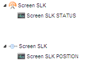

|
This page last changed on Nov 08, 2010 by ventu77.
Hi I'm Simone from Italy
I'm new in the Openremote's world
I've just installed my domotic knx system with Gewiss equipment
I need to command roller shutter actuator through my android panel (Samsung Galaxy S)
Questions
1) the Gewiss90707 Knx/ip router is supported?
2) What is the knx command for the DPT 1.008?
3) DPT 1.008 is correct?
Thanks
Sim
|
You can try using ON/OFF for now (originally intended for DPT 1.001). I haven't added key mappings for 1.008 yet (UP/DOWN) but the actual frame on the wire should be the same (1-bit) so try the DPT 1.001 now and I'll add all the proper keywords later.

Posted by juha at Nov 08, 2010 18:04
|
|
It works. Thanks
Posted by ventu77 at Nov 18, 2010 16:29
|
|
Are the up down functions integrated now?
How did you lonitor the status of your screen? I can only have my screens move down, no way to get them going up....
Posted by icefluffy at Jul 24, 2012 16:39
|
|
Blinds or screens normally can only send a percent value (screen position). You could use that to visualize a status.
To be able to move them up and down just create 2 command with DPT1.001 and one with command "on" and the other with command "off".
Create 2 buttons and assign the commands. Now you should have a UP button and DOWN button.
Posted by mredeker at Jul 25, 2012 08:35
|
|
Heyt Markus, thanks for the reply!
I created a COMMAND containing the STATUS commmand using 5.001:
I created a COMMAND containing the SCALE command using 5.001:
I linked a sensor to the STATUS command and a slider to the SCALE command:

This is working for me...
Using the slider I can move the screen to a desired position and if the screen is moved by someone else I get the final position of the screen displayed by the slider.
The only problem I'm confronted with, is that using my iPad to shut the screen completely, the screen goes down to 100% and out of the blue, no commands being sent, it goed back to 83%!!!
anybody have any ideas?
Posted by icefluffy at Jul 29, 2012 18:55
|
|
It could be the case that your actuatir is sending an intermediate status during the going down of the scrren. If you want the screen go to 100% your actuator send 83% while the screen is still going. The 83% is received from OpenRemote which sets the slider to 83% which causes a move to 83% also. This results in your screen stopping at 83%. I think this might be still a bug in our slider because it should not send another command if it is only positioned from the status update and not from itself.
Posted by mredeker at Jul 29, 2012 23:17
|
|
Hey Markus,
I thinking the bug is not in your slider but in my blind controller.
I have THE Same problems when using ETS to send THE commands to my blinds...
Greetz!
Posted by icefluffy at Aug 03, 2012 15:04
|
|
{kind=link}
{kind=link}
{kind=link}
{kind=link}